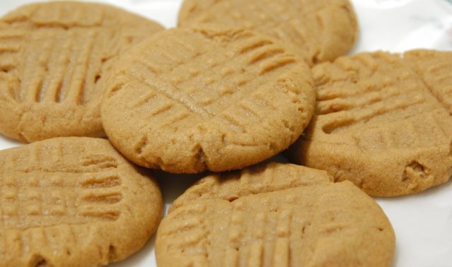

Recipes
Directions:
Mix first six ingredients.
Add the rest of the ingredients.
Mix well.
Roll into balls and press down with a fork dipped in sugar or flour.
Bake for 10-12 minutes on ungreased cookie sheet. Ovens vary so your baking time may be less. Just keep an eye on them.
Ingredients:
1/2 cup butter
1/2 cup peanut butter
1/2 cup brown sugar
1 egg
1/2 teaspoon vanilla
1 1/4 cups sifted flour
3/4 teaspoon baking soda
1/4 teaspoon salt